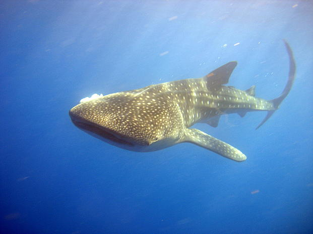
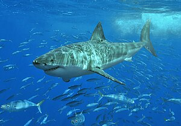
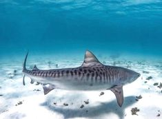

Tiburón ballena
A pesar de su gran tamaño es considerado como "tiburon gentle" ya que no es agresivo con los humanos.

Tiburón blanco
Es considerado un tiburón apex, ya que no tiene depredadores naturales en su ecositema.

Tiburón tigre
Es conocido por su capacida para detectar y seguir el rastro de sangre en el agua.